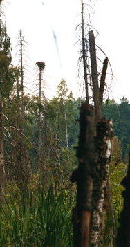

Ключевая орнитологическая территория
В 2000 году территория Красного леса была объявлена ключевой орнитологической территорией общеевропейского значения, важной для сохранения некоторых видов птиц.
В этом районе гнездится малый подорлик Aquila pomarina, орлан-белохвост Haliaeetus albicilla, скопа Pandion haliaetus, чёрный аист Ciconia nigra.
Озёра Виштынецкой возвышенности являются единственным местом регулярного гнездования в Калининградской области большого крохаля Mergus merganser и обыкновенного гоголя Bucephala clangula.

Литература
Гришанов Г. В. Ключевые орнитологические территории Балтийского региона России. — СПб., 2000. — С. 67–68.